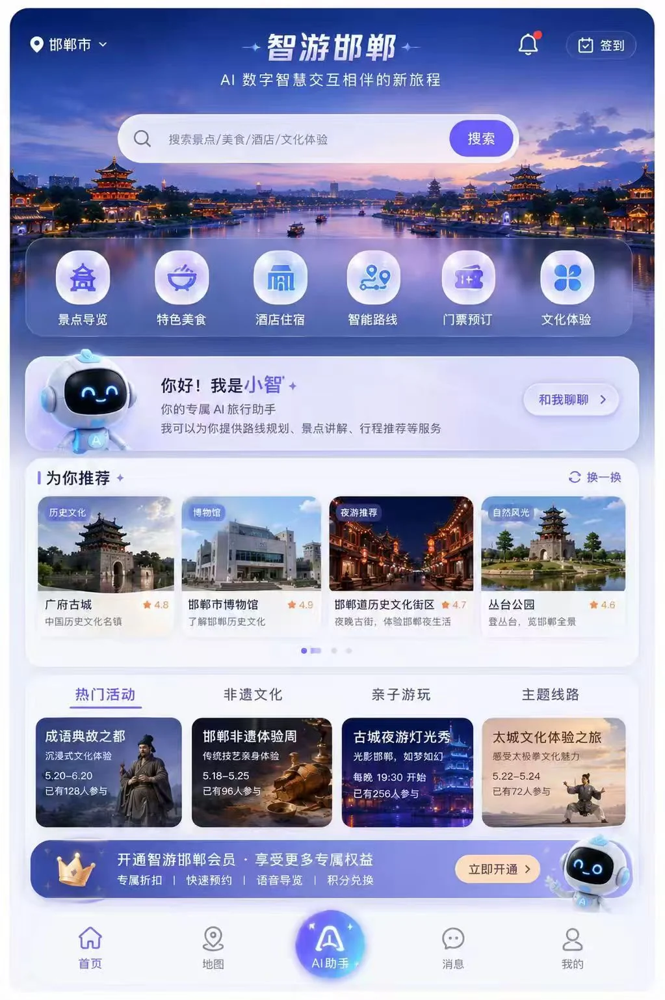
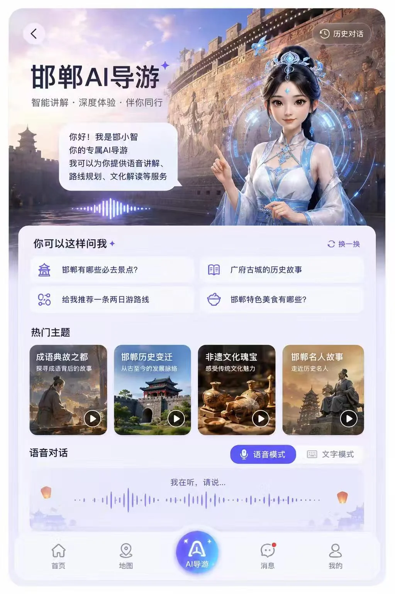
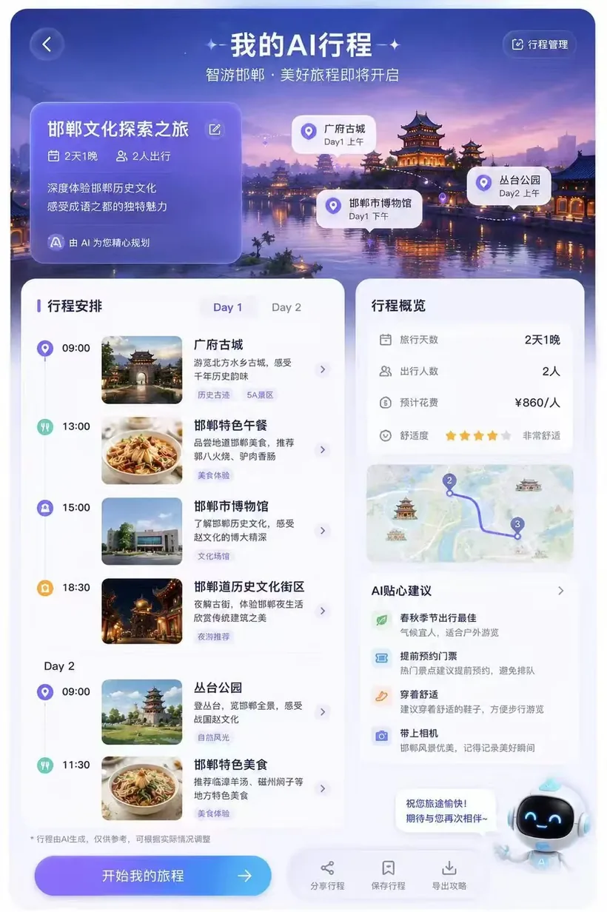
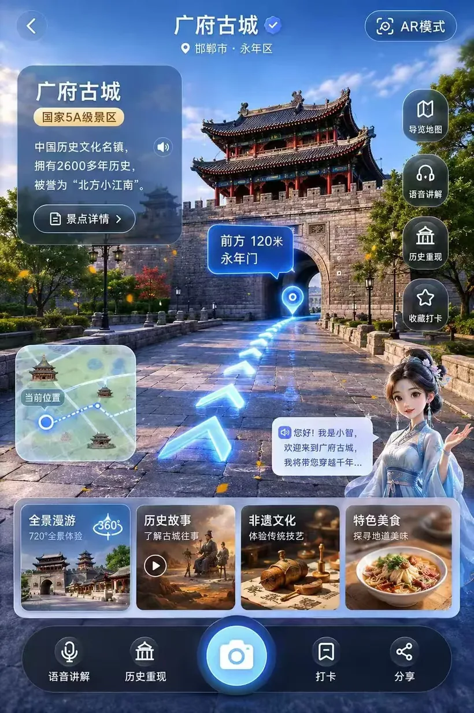
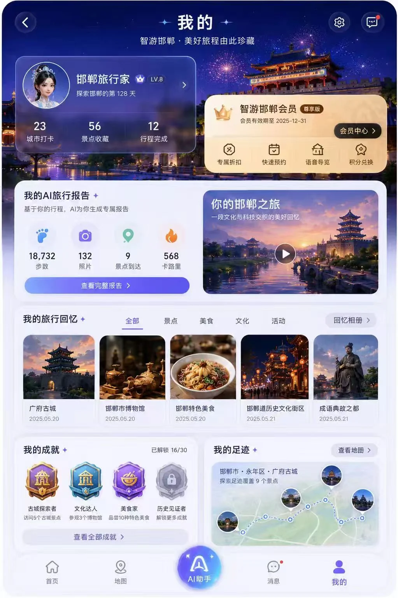

智游邯郸AI 智慧文旅 APP · 让一次旅行，从“查攻略”变成“被接住”
邯郸不缺内容：广府古城、成语典故、非遗、博物馆。真正缺的，是一条把 “我想去”变成“我现在怎么走”的连续体验。 这个项目用 AI 数字人、本地 RAG 知识库与个性化行程，把散落的信息重新组织成一段可执行的旅程。





游客真正卡住的，不是“不知道去哪”，而是“下一步做什么”。
在前期调研里，我把游客的行程拆成行前、行中、行后三个阶段。线索很一致： 信息并不少，但缺少组织；工具并不少，但彼此断开。
攻略散落在十几个 App 里
短视频、笔记、地图、购票平台各管一段。用户需要自己拼路线、算时间、查历史，决策成本高。
到了现场，讲解和导航是断的
景点介绍停留在“简介牌”，路线只告诉你在哪，不告诉你“往哪走、看什么、为什么值得看”。
没有沉淀，也没有再来的理由
照片留在相册，行程结束即结束。缺少成就、回忆与权益，用户和城市之间没有长期关系。
自助游与研学两类核心人群
自助游用户要自由和效率；研学用户要知识密度和可信讲解。两类人都需要“可解释的 AI”，而不是黑盒推荐。
从调研到原型，把“AI 能做什么”翻译成“用户先做什么”。
我负责用户调研、需求拆解、信息架构、PRD 与全套高保真原型，并参与产品定位与 AI 能力边界的讨论。 在这个过程中，我给自己定的原则是：先保证旅程闭环，再谈 AI 的惊艳感。
用一条“导游—行程—导航—沉淀”的链路，接住用户的每一步。
产品结构围绕用户当下的任务组织，而不是围绕技术能力组织。首页是城市入口， AI 助手是随时的兜底，行程是行动的骨架，AR 与打卡负责现场体验和情绪价值。
AI 数字人导游「小智」
语音与文字双入口，支持景点讲解、路线规划、文化解读。用拟人化形象降低“和机器说话”的心理门槛。
本地文旅知识库
把景点、历史典故、非遗资源组织成可检索知识库。回答优先引用本地资料，宁可保守，也不编造史实。
可编辑的 AI 行程
按天数、人数、偏好生成路线，同时保留时间、预算、舒适度与交通信息，让用户能改、能执行。
AR 导航与打卡成就
现场用 AR 方向指引与语音讲解降低找路成本；行后用徽章、旅行报告与会员权益延长关系。
RAG 不是“接个知识库”，而是一套回答质量的产品约束。
在产品方案里，我把导游问答拆成五个环节：意图识别、知识检索、结果重排、受控生成、出处与兜底。 对史实类问题，系统必须给出可追溯的资料依据；检索不到时明确说“不知道”，并引导用户换一种问法。
意图识别
区分问景点、问路线、问历史、问服务。
知识检索
从景点 / 典故 / 非遗知识库召回相关内容。
结果重排
按地点、时效与可信度排序，优先本地资料。
受控生成
限定回答边界，保留出处，拒答不确定内容。
反馈兜底
收集追问与不满意，回流知识库和 Prompt。
每一个“做”，背后都有一个更重要的“先不做”。
数字人 + 语音，而不是纯聊天框
旅游场景是移动、碎片、抬眼看路的。语音和拟人形象更贴近“导游”心智，也降低了中老年与研学用户的使用门槛。
先做“导游 + 行程”，AR 作为增强
高频且可闭环的是“问—规划—出发”。AR 很酷，但依赖现场与设备能力，放在第二阶段验证，避免拖慢 MVP。
知识库边界优先于回答丰富度
文旅内容最怕“编”。我宁愿让 AI 说“这段资料暂未收录”，也不让它在历史年代和人物关系上自由发挥。
商业权益长在旅程里，而不是弹窗里
会员权益与预约、语音导览、积分兑换绑定，出现在用户需要的那一刻，而不是用强打扰换转化。
一套可以继续往下做的产品底稿。
项目最终交付了完整的产品方案与高保真界面，覆盖首页、AI 导游、AI 行程、AR 导航与个人中心五个核心页面。 更重要的是，我把“AI 文旅”从一句概念，拆成了可评估的能力、可执行的流程和可验证的指标。
如果继续做，我会先看这四个指标。
- 行程完成率：生成行程后，真正开始并按计划完成的比例，验证“可用”而不是“好看”。
- AI 问答解决率：用户提问后未转人工 / 未重新搜索的比例，验证知识库与回答质量。
- 现场功能渗透率：到达景点后使用 AR / 语音讲解的比例，验证场景匹配度。
- 会员转化与复访：权益领取后的预约转化、7 日 / 30 日复访，验证商业闭环。